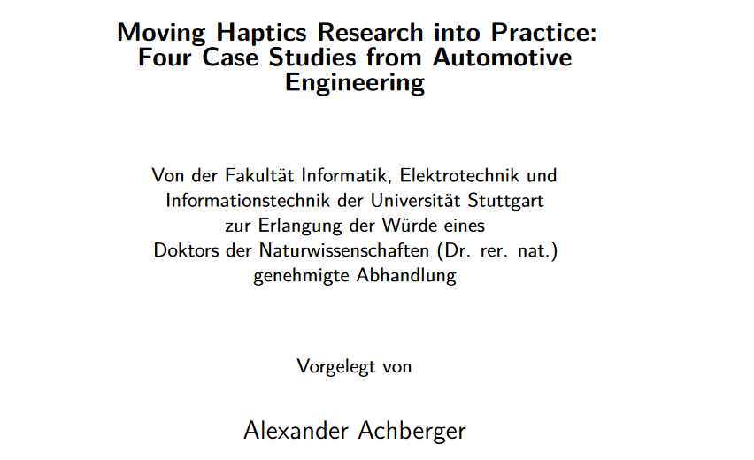

Moving Haptics Research into Practice: Four Case Studies from Automotive Engineering

Authors. Alexander Achberger
Venue. University of Stuttgart (2023) PhD Thesis
Type. PhD Thesis
Abstract. Virtual Reality (VR) has gained popularity and found applications in various fields, including the automotive industry. Over the years, VR has been used in assembly, ergonomic studies, and other automotive use cases to aid development. Engineers already benefit from using VR at different stages of development, but the current setups provide only visual, auditory, and limited vibrotactile feedback on controllers. These feedback types cannot accurately simulate forces for realistic collisions or weight simulation of virtual car components. Despite ongoing research in haptic technology, there are still limitations in creating a perfect haptic feedback system that can accurately simulate all tactile and kinesthetic stimuli without hindering movement or comfort. The automotive industry needs suitable haptic feedback devices, but most research focuses on developing new devices rather than integrating them practically. We conducted four case studies to address this challenge to bridge the gap between haptic research and practical applications in automotive VR tasks. During these studies, we collaborated closely with automotive VR engineers to understand their needs and obtain feedback on using haptic devices. Our approach involved developing new haptic feedback devices based on technique- and problem-driven approaches. We created the PropellerHand, an ungrounded hand-mounted haptic device that allows forces on the hand without hindering hand use. STRIVE and STROE were developed based on problem-driven approaches, providing string-based haptic feedback devices to simulate collisions and weight. Finally, we created a multimodal haptic feedback system by combining STRIVE, STROE, and the haptic feedback glove SenseGlove, enabling users to simultaneously experience grabbing, weight, and collision feedback. Over three years, we extensively researched and implemented haptic feedback devices in practical settings. We interviewed more than 25 VR experts from the automotive industry, observed over 45 VR use cases, and collected feedback from over 200 individuals who tested our feedback devices. Based on this information, we formulated recommendations for moving haptic research into practice.